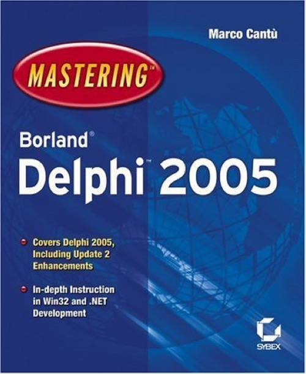

Mastering Borland Delphi 2005
Published by : Sybex
Writed by : Marco Cantú
Published date : 26/08/2005
ISBN-10 : 0782143423
ISBN-13 : 9780782143423
Language :  English
English
Web site : https://www.marcocantu.com/md2005/
About Mastering Borland Delphi 2005
Delphi Takes a Great Leap Forward; It's Time for You to Do the Same
The latest release of Borland's Delphi is a major overhaul, featuring a brand-new IDE for both Win32 and .NET development and tons of other improvements. Mastering Borland Delphi 2005 is the best way to get up to speed, whether you're starting from scratch or have experience with an earlier version. Written by an award-winning and internationally known Delphi expert, this book shows you how to capitalize on Delphi's many advantages--including its clean language, speed of development, portability, and an active community that has produced hundreds of third-party tools.
Coverage Includes
* Writing code using the Delphi language
* Navigating the Delphi 2005 IDE
* Understanding the relationship between Delphi and Microsoft's .NET Framework
* Tapping Delphi's database support
* Using ADO.NET and the Borland Data Providers
* Developing multi-tiered applications on Win32 and .NET platforms
* Writing applications that will be portable from Win32 to .NET
* Using Indy for sockets programming
* Understanding your web development options with Delphi, including WebBroker, WebSnap, IntraWeb, and ASP.NET
* Taking advantage of Delphi's XML and web services support
* Using the ECO framework for Model-Driven Architecture
Detailed Coverage of the Delphi Language, from an OOP Perspective
In-depth Instruction in Win32 and .NET Development Using the New IDE
Learn How Much You Can Accomplish with the Combined Borland and .NET Libraries
See Why Delphi Is Now an Even Better Choice for Internet Development
Master Delphi's Many New Capabilities, Including Refactoring, Unit Testing, Database Management, and More
Where to buy ?
This book has the ISBN13 "9780782143423".
If it is still available for sale, you can order it in your favorite bookstore, by its publisher or online at
Amazon CA,
Amazon FR,
Amazon JP,
Amazon UK or
Amazon USA depending on your country.
Table of content
Introduction.
Part 1: Foundations.
Chapter 1: Introducing Borland Developer Studio 3.0.
Chapter 2: The Platforms: Win32 and Microsoft .NET.
Chapter 3: The Delphi Programming Language.
Chapter 4: The Delphi Language for .NET.
Chapter 5: Delphi Win32 Run-Time Library.
Chapter 6: Architecture of the Visual Component Library (VCL).
Chapter 7: Working with Forms.
Chapter 8: Building the User Interface with VCL (for Win32 and .NET).
Chapter 9: Delphi .NET Run-Time Library and the Framework Class Library.
Part 2: Delphi Object-Oriented Architectures.
Chapter 10: Refactoring and Unit Testing.
Chapter 11: Dynamic Architectures (with Libraries, Packages, and Assemblies).
Chapter 12: COM and .NET Interoperability.
Part 3: Delphi Database-Oriented Architectures.
Chapter 13: Delphi’s Database Architecture.
Chapter 14: Client/Server Development with
Chapter 15: Working with ADO.
Chapter 16: Using ADO.NET.
Chapter 17: Multitier Architectures.
Chapter 18: Using Enterprise Core Objects (ECO).
Part 4: Delphi and the Internet.
Chapter 19: HTML and HTTP Development.
Chapter 20: WebSnap and IntraWeb.
Chapter 21: The ASP.NET Architecture.
Chapter 22: Using XML Technologies.
Chapter 23: Web Services and SOAP.
Part 5: Appendices.
Appendix A: Learning the Foundations of Delphi.
Appendix B: Add-on Delphi Tools.
Index.